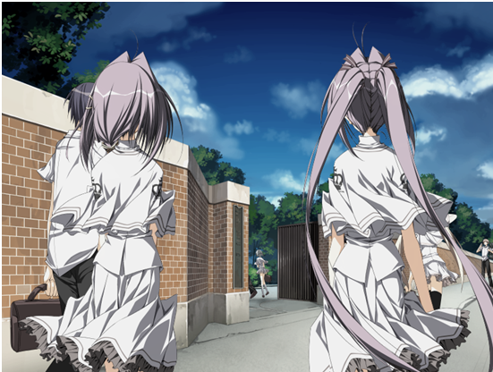
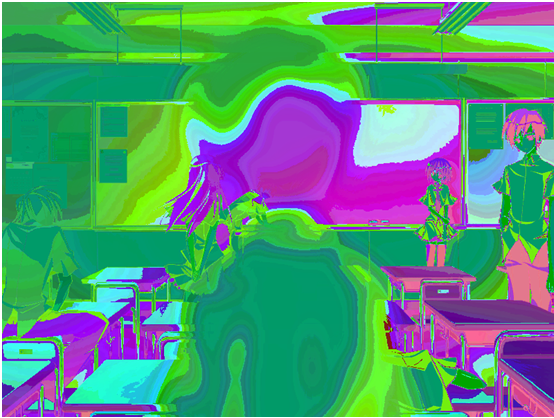
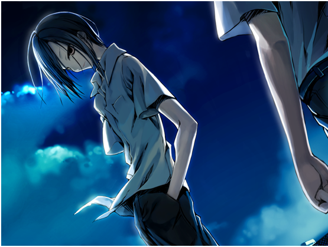
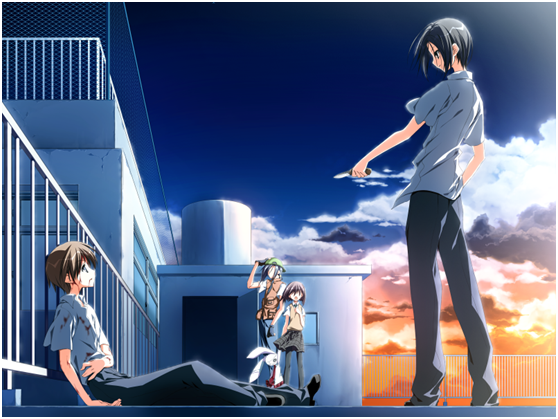
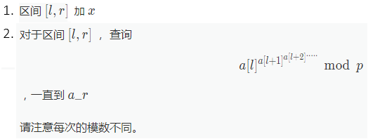

'Twas brillig, and the slithy toves
Did gyre and gimble in the wabe;
All mimsy were the borogoves,
And the mome raths outgrabe.
"Beware the Jabberwock, my son!
The jaws that bite, the claws that catch!
Beware the Jubjub bird, and shun
The frumious Bandersnatch!"
He took his vorpal sword in hand:
Long time the manxome foe he sought --
So rested he by the Tumtum tree,
And stood awhile in thought
And as in uffish thought he stood,
The Jabberwock, with eyes of flame,
Came whiffling through the tulgey wood,
And burbled as it came!
One, two! One, two! and through and through
The vorpal blade went snicker-snack!
He left it dead, and with its head
He went galumphing back.
"And hast thou slain the Jabberwock?
Come to my arms, my beamish boy!
O frabjous day! Callooh! Callay!"
He chortled in his joy.
'Twas brillig, and the slithy toves
Did gyre and gimble in the wabe;
All mimsy were the borogoves,
And the mome raths outgrabe.
----"Jabberwocky"

我喊了出来...却不成人话
只能，像在水中一边融化一边下沉的方糖一样...
失去自己的轮廓...一直沉向最低处
想要爬上去的自我
维持自己是自己的连续体...
溶解的渐渐七零八落的意识...
失去了用来挣扎的双手
失去了用来挣扎的双臂
向下，
向下，
一直沉下去
向着意识的底层
沉陷下去的自我...
逐渐消失的世界...
我看到了世界
失落的...世界...
回归天空的话我就可以成为 了
开什么玩笑，你才不是什么 ！
吵死了！吵死了！我是 ！而且生来就是！
就是因为这个家伙我才失去 的资格的！
呜呜呜，由岐姐姐，由岐姐姐！
...怎么会...由岐姐...
卓司！你这家伙！
吵死了吵死了！像你这样的普通人懂些什么！
由岐的血慢慢在冰凉的水泥地上扩散开来
抱在怀里的 在渐渐地流出来 本应成为 而出生
的我的被 妨碍了！
不出生的话我就没法拯救这个世界！
所以预言者说了当世界回归天空的此处就是尽头
只要 回归天空的话！
我有这么可怕吗？
因为我是要对一切生物下达审判的存在！
因为哥哥是凡人呢
凡人与天才
救世主
世界
救世主
回天之门
要死的是你！
我不会死 不会死 诅咒你
要死的是羽咲
只要羽咲死了
间宫 皆
守 由
岐
间宫羽咲
可能性
和镜
终
终之空
空

一个婴儿出生了
谁的？
不知道
虽然不知道...
但确实有一个婴儿出生了
嗯...那个婴儿在哭...
呜嘎，呜嘎，地哭着...
听到这个哭声大家都笑了
大家都在为婴儿祝福
母亲也是...
父亲也是...
并且其他人也是...
为那个婴儿的出生...
衷心祝福
世界充满着生命的祝福
但是
但不是这样的
在那里
我
我一个人在那里恐惧着
非常恐惧...
要说为什么的话...
因为那是在对世界进行诅咒
没错...
他在诅咒着那个世界，那个刚出生的婴儿
诅咒着自己的出生
我
我当场全身僵硬
在大家的笑容之中
在祝福之中
独自一人...
我啊...
我摇摇晃晃地...
接近那个婴儿
然后想要让那个婴儿停止哭泣
我想着必须要那样做才行
为什么呢？
我自己也不明白...
那是
那是，自从出生以来
就悲惨地活到今天的我能做到的
我能做到的
唯一的
唯一的赎罪啊。
让我在这里了结了你吧…间宫卓司
这里是终之空的下面吧…这不刚好吗
跟我们的终结很相称不是吗…
这里，是只对你而言的，终结的天空…
这里就是终焉之地…

"不行！绝对不行！"
…为什么…跟过来了…

预定…调和吗…
原来如此…看来不管怎样对于你来说…我都已经毫无任何价值了对吧…
竟然被这家伙打倒了…真是没办法呐…
这也是现实吗…
那就接受吧…
不知为何，我好像看到了在夜空中挺立的向日葵…
只有一瞬间…
那株向日葵…
好像在某个地方…
向日葵…
跟羽咲一起…
是啊…
我是哥哥啊…
要是…能再多当当她的哥哥就好了……
咦……
刚才的…
那个是…那片风景…
是吗…那片风景…
我也是知道的啊…
在坡道途中的向日葵…
蔚蓝的天空和向日葵。
飘浮着大大的云朵…
羽咲戴着大大的帽子…
然后跟我走在一起…
走着走着…
为了…
两人一起…
爬上那个坡道…
因为…那个坡道的前面有很漂亮的景色…
您正在打galgame，然后您觉得这个gal不知所云，于是您弃坑了，开始写数据结构题：
给一个长为n的序列，m次操作，每次操作：
